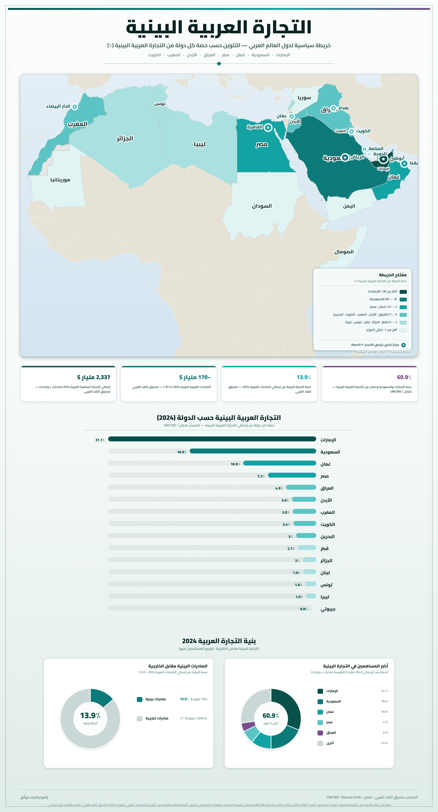
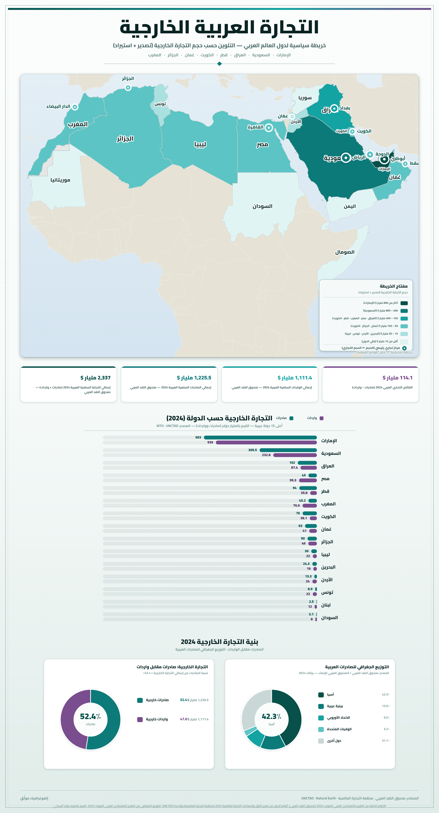
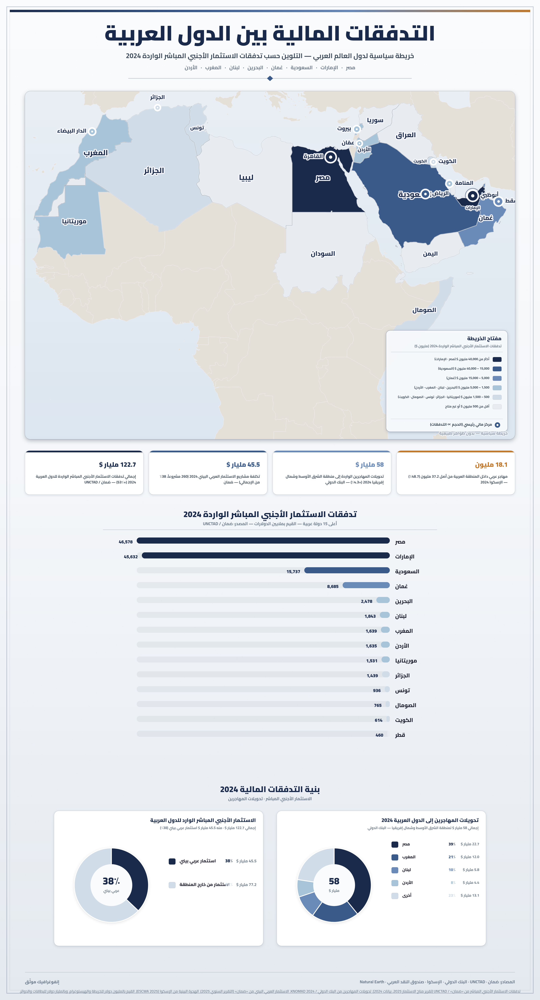
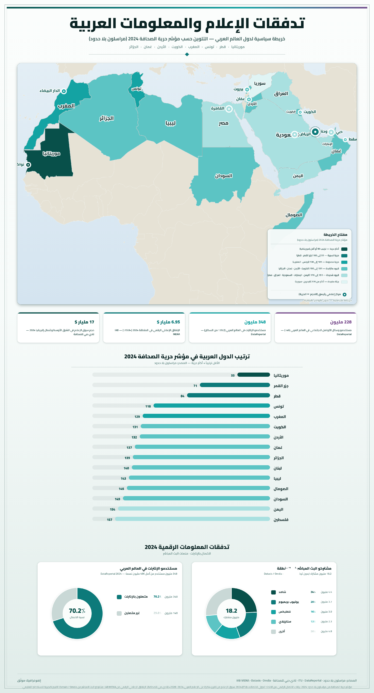

الأدفاق الماديّة واللاّماديّة بالعالم العربي
مقدمة
الأدفاق الماديّة هي أساسًا أدفاق السلع والأموال، والأدفاق اللاّماديّة هي أدفاق الإعلام والمعلومات. وتتمّ هذه الأدفاق بين البلدان العربية وبين العالم العربي والخارج. وتكشف هذه الأدفاق عن مدى اندماج الاقتصاديات العربية في الاقتصاد العالمي وعن مكانتها في ظلّ العولمة.
فما هي خصائص الأدفاق الماديّة واللاماديّة البينيّة العربيّة وما هي تركيبتها وما هي العوامل المؤثرة فيها؟ وما هي خصائص هذه الأدفاق بين العالم العربي وخارجه وما هي تركيبتها وما هي العوامل المؤثرة فيها؟
I أدفاق السلع في العالم العربي
1. أدفاق التجارة العربيّة البينيّة
أ. خصائصها
تتميّز التجارة العربيّة البينيّة بمحدوديتها، حيث بلغت نسبة الصادرات البينيّة 14,8% من مجموع الصادرات العربيّة، وتقلّ نسبة وارداتها عن 10% من مجموع الواردات العربيّة. كما تقتصر هذه التجارة على عدد محدود من الشركاء، حيث يتمّ أغلب التبادل التجاري البيني بين دول عربيّة مجاورة مثل ليبيا وتونس.
ب. تركيبتها
تهيمن المواد الخام والمحروقات على التجارة العربيّة البينيّة، حيث تحتكر 52,2% من الصادرات البينيّة و42,7% من وارداتها، تليها المواد الصناعيّة، وتحتّل المواد الغذائيّة المرتبة الأخيرة. ويعكس هذا التركيب ضعف التكامل الاقتصادي العربي وغياب التنويع الصناعي.
ج. العوامل المفسّرة لمحدوديّة التجارة العربيّة البينيّة
- القيود الجمركيّة.
- عدم اكتمال شبكات النقل البري والحديدي بين البلدان العربيّة.
- ارتفاع تكاليف النقل البري والبحري بالمنطقة العربيّة.
- التعقيدات الإدارية المرتبطة بحركة النقل بين البلدان العربيّة.
2. أدفاق التجارة العربيّة الخارجيّة
أ. خصائصها
تتميّز المبادلات التجاريّة العربيّة مع الخارج بمحدوديتها، حيث لم تتجاوز نسبة الصادرات العربيّة 4% من مجموع الصادرات العالميّة، ولم تتجاوز نسبة الواردات العربيّة 2,5% من مجموع الواردات العالميّة. وتتمّ التجارة العربيّة مع الخارج أساسًا مع الثالوث الاقتصادي، ويعتبر الاتحاد الأوروبي أهمّ شريك تجاري للبلدان العربيّة، حيث يزوّد العالم العربي بـ 44,2% من الواردات العربيّة ويستقبل 27,6% من صادراتها.
ب. تركيبتها
- الصادرات: هيمنة المواد الخام وخاصّة المحروقات بـ 71,6% من مجموع الصادرات العربيّة إلى الخارج، ممّا يعكس تبعيّة الاقتصاديات العربية لتقلّبات أسعار الطاقة في السوق العالمية.
- الواردات: هيمنة المواد الصناعيّة بـ 75,3% من مجموع الواردات العربيّة من الخارج، وهو ما يعكس التبعيّة التكنولوجية وضعف القدرة التنافسية للصناعة العربية.
ج. العوامل المؤثرة على التجارة العربيّة مع الخارج
- ارتباط التجارة العربيّة أساسًا بصادرات المحروقات.
- ارتباط أسعار النفط بالظرفيّة العالميّة.
- التبعيّة التكنولوجيّة.
- ضعف القدرة على المنافسة الخارجيّة.
II الأدفاق الماليّة بالعالم العربي
تتمثل الأدفاق الماليّة بالعالم العربي في الاستثمارات المباشرة وعائدات المهاجرين والسياحة والديون الخارجيّة.
1. الاستثمارات المباشرة بالعالم العربي
أ. الاستثمارات البينيّة العربيّة المباشرة
تتميّز الاستثمارات البينيّة العربيّة المباشرة بضعفها، حيث بلغت 13,9 مليار دولار بين سنتي 1980 و1999. وتتركز هذه الاستثمارات أساسًا في مصر ولبنان وسوريا والسودان والسعوديّة وتونس والإمارات. ويعود ضعف الاستثمارات البينيّة العربيّة المباشرة إلى عدم استقرار المناخ الاستثماري في العالم العربي.
ب. الاستثمار الأجنبي المباشر في العالم العربي
يتميّز الاستثمار الأجنبي المباشر في العالم العربي بضعفه، حيث بلغ 46,7 مليار دولار بين سنتي 1995 و2003، وهو ما يمثل أقلّ من 1% من الاستثمار الأجنبي على صعيد العالم. ويتركز هذا الاستثمار أساسًا في مصر والسعوديّة والمغرب وتونس والبحرين. ويعود ضعف الاستثمار الأجنبي المباشر في العالم العربي إلى مجموعة من العوامل:
- نقص وتخلّف الهياكل والبيانات الأساسيّة من خدمات الطرق والنقل والمواصلات والاتصالات…
- محدوديّة السوق المحليّة.
- غياب أو ضعف أسواق المال في غالبيّة البلدان العربيّة والنقص النسبي في التشريعات المنظّمة لها.
- عدم الاستقرار السياسي في العديد من البلدان العربيّة.
- عدم توفّر البيانات الكافية عن فرص الاستثمار في معظم البلدان العربيّة.
- تعقيد الإجراءات الحكوميّة المتعلّقة بالترخيص للاستثمار.
- نقص الكوادر والخبرات الفنيّة والإداريّة…
2. عائدات السياحة والمهاجرين والديون الخارجيّة
أ. عائدات السياحة والمهاجرين
بلغت عائدات السياحة العربيّة في أواخر التسعينات 11,103 مليون دولار، وهو ما يمثّل 2,5% من عائدات السياحة في العالم. وتصدر هذه العائدات الماليّة السياحيّة عن البلدان العربيّة فيما بينها، غير أنّ النصيب الأوفر منها يتأتّى من بلدان أوروبا التي تُعدّ المصدر الرئيسي للسياح باتجاه العالم العربي. أمّا عائدات المهاجرين بالعالم العربي، فتتميّز بأهميتها خاصّة باتّجاه مصر والمغرب والأردن وتونس والسودان، وتأتي أغلبها من السعوديّة والكويت وعُمان والبحرين ومن عدّة دول أوروبيّة وأمريكا الشماليّة.
ب. الديون الخارجيّة
بلغ حجم الديون الخارجيّة بالبلدان العربيّة 147,1 مليار دولار سنة 2003، وقد ارتفع إجمالي الدين بكلّ الدول العربيّة، خاصّة بتونس وموريتانيا والسودان وجيبوتي ولبنان واليمن والأردن. وتتأتّى هذه الديون من المؤسّسات الماليّة العالميّة مثل صندوق النقد الدولي، ومن البلدان المقرضة والبنوك التابعة للبلدان المتقدّمة.
III أدفاق الإعلام والمعلومات بالعالم العربي
1. الإعلام واتجاهاته بالعالم العربي
أ. تعريف الإعلام
الإعلام هو نقل المعلومات بين البشر بواسطة وسائل أساسيّة (مثل الصحافة والإذاعة والتلفزة والهاتف…) وثانويّة (السينما والمسرح والكتب) ومتطوّرة (مثل الأقمار الصناعيّة والأنترنات).
ب. أهم اتجاهات أدفاق المعلومات بالعالم العربي
تتمّ أغلب أدفاق الاتصالات الهاتفيّة بين البلدان العربيّة ومع الخارج، وتعتمد على عدد قليل من الأقمار الصناعيّة مثل عربسات. وتتميّز هذه الأدفاق بالتباين حسب اتجاهها:
- بين البلدان العربيّة: تنطلق هذه الأدفاق من البلدان العربيّة المستقبلة للهاجرين مثل السعوديّة والإمارات وقطر باتّجاه مصر والسودان.
- بين البلدان العربيّة والخارج: تنطلق هذه الأدفاق من البلدان المتقدّمة مثل بلدان الاتحاد الأوروبي والولايات المتحدة الأمريكيّة باتّجاه بلدان المغرب العربي ومصر.
2. أصناف أدفاق المعلومات
أ. التلفزيون
ارتفع عدد القنوات الفضائيّة العربيّة إلى 120 قناة، حوالي 70% منها تابعة لحكومات عربيّة. وتفتقد البلدان العربيّة إلى وجود وكالات متخصّصة في الأخبار النوعيّة مثل الصحة والبيئة والاقتصاد…
ب. الصحافة
انخفض عدد الصحف العربيّة لكلّ 1000 شخص إلى أقلّ من 53 صحيفة، مقابل 285 صحيفة بالبلدان المتقدّمة. ويعود هذا الانخفاض إلى انخفاض معدّلات القراءة، وارتفاع تكاليف الصحف العربيّة مقارنة بالدخل، وتراجع مستوى الصحافة العربيّة وعدم استقلاليّتها.
ج. الترجمة وحركة النشر والكتب
يضعف مستوى الترجمة بالبلدان العربيّة، حيث بلغ عدد الكتب المترجمة 330 كتابًا في السنة، وهو خُمس ما تترجمه اليونان. وتواجه عمليّة نشر وتوزيع الكتب الصادرة من بلدان عربيّة صعوبات جمّة، إذ يعامل الكتاب كسلعة محظورة.
د. الأنترنات
تتّصف أدفاق الأنترنات بالمحدوديّة، حيث بلغ عدد مستعملي الأنترنات بالعالم العربي 4,2 مليون شخص يمثّلون 1,6% من سكان العالم العربي. ويعود سبب ذلك إلى ضعف مستوى المعرفة بالحواسيب والأنترنات، وارتفاع أسعار الخطوط المستخدمة ورسوم الاشتراك، وهو ما يعمّق الفجوة الرقميّة بين العالم العربي والعالم المتقدّم.
خاتمة
رغم أهميّة ثرواته وتنوّعها، لا يساهم العالم العربي إلاّ بقدر ضعيف في أدفاق السلع والأموال والمعلومات، وهو ما يعكس حالة التأخّر والضعف والتخلّف في بنيته الاقتصادية والاجتماعية والمعرفية.
أرقام مفتاحية:
- 14,8%: نسبة الصادرات البينيّة العربيّة من مجموع الصادرات العربيّة.
- 44,2%: حصة الاتحاد الأوروبي من الواردات العربيّة.
- 71,6%: نسبة المحروقات من الصادرات العربيّة إلى الخارج.
- 46,7 مليار $: حجم الاستثمار الأجنبي المباشر في العالم العربي (1995–2003).
- 147,1 مليار $: حجم الديون الخارجيّة بالبلدان العربيّة سنة 2003.
- 4,2 مليون: عدد مستعملي الأنترنات بالعالم العربي (1,6% من السكان).
📖 تعريفات
📌 مصطلحات
- الأدفاق الماديّة: حركة تنقّل السلع والأموال بين البلدان العربية فيما بينها أو بينها وبين الخارج، وتشمل التجارة والاستثمارات المباشرة وعائدات السياحة والديون الخارجيّة.
- الأدفاق اللاّماديّة: أدفاق الإعلام والمعلومات بين البشر بواسطة وسائل أساسيّة (الصحافة والإذاعة والتلفزة والهاتف) وثانويّة (السينما والمسرح والكتب) ومتطوّرة (الأقمار الصناعيّة والأنترنات).
- التجارة العربيّة البينيّة: المبادلات التجاريّة القائمة بين البلدان العربيّة فيما بينها، وتبلغ نسبة صادراتها 14,8% فقط من مجموع الصادرات العربيّة.
- التجارة العربيّة الخارجيّة: المبادلات التجاريّة بين العالم العربي والخارج، وتتمّ أساسًا مع الثالوث الاقتصادي (الاتحاد الأوروبي، الولايات المتحدة، اليابان) وخاصّة الاتحاد الأوروبي.
- المناخ الاستثماري: مجموع الشروط الاقتصادية والسياسية والقانونية والإدارية التي تؤثّر على جذب الاستثمارات المحلّية والأجنبيّة نحو بلد معيّن، ويُعدّ عدم استقراره في العالم العربي السبب الرئيسي لضعف الاستثمارات البينيّة والأجنبيّة.
- الاستثمار الأجنبي المباشر: استثمار تقوم به شركات أو مؤسّسات أجنبيّة في بلد عربي بهدف إنشاء مشاريع أو المشاركة فيها أو شرائها، وقد بلغ 46,7 مليار دولار بين 1995 و2003، أي أقلّ من 1% من الاستثمار الأجنبي العالمي.
- الفجوة الرقميّة: التباين في الوصول إلى تكنولوجيات المعلومات والاتصال واستخدامها بين البلدان المتقدّمة والبلدان النامية، ويتجلّى في العالم العربي في محدوديّة عدد مستعملي الأنترنات (4,2 مليون فقط سنة 2003، أي 1,6% من السكان) مقارنة بالبلدان المتقدّمة.
- الديون الخارجيّة: المبالغ الماليّة المستحقة على البلدان العربيّة تجاه المؤسّسات الماليّة العالميّة (صندوق النقد الدولي) والبنوك والبلدان المقرضة المتقدّمة، وبلغت 147,1 مليار دولار سنة 2003.
- عائدات المهاجرين: الأموال التي يحوّلها المهاجرون العرب العاملون في الخارج إلى بلدانهم الأصلية، وتأتي أغلبها من السعوديّة والكويت وعُمان والبحرين ومن عدّة دول أوروبيّة وأمريكا الشماليّة نحو مصر والمغرب والأردن وتونس والسودان.
- عربسات (Arabsat): منظومة أقمار صناعيّة عربيّة للاتصالات والبثّ التلفزي، تعتمد عليها أغلب أدفاق الاتصالات الهاتفيّة والإعلامية بين البلدان العربيّة.
- الثالوث الاقتصادي: يُقصد به الأقطاب الاقتصادية العالميّة الكبرى: الاتحاد الأوروبي والولايات المتحدة الأمريكيّة واليابان، وهي الشريك التجاري الأساسي للعالم العربي.
🌍 دول ومناطق
- الاتحاد الأوروبي: أهمّ شريك تجاري للبلدان العربيّة، حيث يزوّد العالم العربي بـ 44,2% من وارداته ويستقبل 27,6% من صادراته، كما يُعدّ المصدر الرئيسي للسياح باتجاه العالم العربي.
- مصر: من أكثر البلدان العربيّة استقبالًا للاستثمارات الأجنبيّة المباشرة والعائدات السياحيّة وعائدات المهاجرين، ومن بين أهمّ مستقبلي أدفاق المعلومات من البلدان المتقدّمة.
- المملكة العربية السعودية: من أهمّ مصادر عائدات المهاجرين باتجاه البلدان العربيّة، ومن أهمّ البلدان المستقبلة للاستثمارات الأجنبيّة المباشرة في العالم العربي.
- تونس: من أهمّ البلدان المستقبلة للاستثمارات الأجنبيّة المباشرة في المغرب العربي، كما يزداد حجم ديونها الخارجيّة، وهي من الوجهات السياحيّة الرئيسية في المنطقة.
- الولايات المتحدة الأمريكية: أحد أقطاب الثالوث الاقتصادي وأحد المصادر الرئيسية لأدفاق المعلومات نحو بلدان المغرب العربي ومصر، وكذلك مصدر لعائدات المهاجرين العرب.
📅 سنوات وفترات
- 1980-1999: فترة بلوغ الاستثمارات البينيّة العربيّة المباشرة 13,9 مليار دولار.
- 1995-2003: فترة بلوغ الاستثمار الأجنبي المباشر في العالم العربي 46,7 مليار دولار (أقلّ من 1% من الاستثمار الأجنبي العالمي).
- 2003: سنة بلوغ الديون الخارجيّة بالبلدان العربيّة 147,1 مليار دولار.
🗺️ خرائط ومعطيات مصورة



